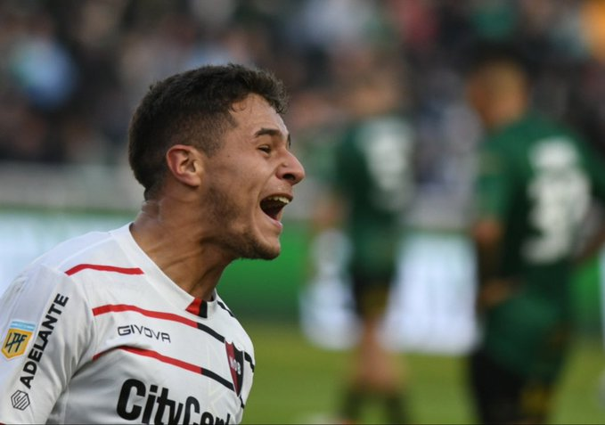

"Siento el crecimiento en lo grupal e individual"
Ramiro Sordo habló en conferencia tras la victoria ante Banfield y mientras se preparan para recibir al Ciclón.
La Lepra redondeó un buen desempeño en el debut del pasado sábado por el certamen de la Liga Profesional 2022 en lo que fue triunfo por 2-1 ante el Taladro y en condición de visitante, un rendimiento colectivo que permite a los dirigidos por Javier Sanguinetti tomar confianza y pensar en continuar por la senda victoriosa cuando este jueves desde las 20 enfrenten a San Lorenzo en el Coloso Marcelo Bielsa.
Uno de los futbolistas que más se destacó en dicho encuentro y que pudo incluso plasmar su nombre en el resultado fue el joven extremo leproso, quien se refirió al momento que atraviesa personalmente: “Me siento muy cómodo y más suelto que en otros momentos. La confianza que me brindan tanto el cuerpo técnico como mis compañeros es muy importante y trabajo al máximo con la intención de demostrar en cancha todo lo que puedo brindarle al equipo”.
“Trato de aportarle al grupo lo mejor de mí. En este primer partido me tocó ser titular, pero cuando no me toque estar apoyaré desde afuera como hace el resto”, agregó Ramiro, quien convirtió el segundo gol de la tarde en el Florencio Sola y sobre el que comentó: “Intenté definir de la forma indicada, donde pensé que era el mejor lugar para ubicar la pelota”.
Luego de sumar los tres puntos en el debut y con el agregado de haberse dado fuera de casa, Newell’s buscará repetir el resultado cuando este jueves por la noche haga su presentación en el Parque con el apoyo de la gente: “Trataremos de ser protagonistas y sacar el partido adelante con el plus de que vamos a tener a nuestra hinchada a favor”.
Por último, Rama destacó la importancia de jugar de local por lo que significa contar con el aliento del hincha: “Esperamos el partido con muchas ganas. La gente va a estar alentando como siempre hizo y va a hacer. Se hacen notar y eso nunca va a cambiar”.